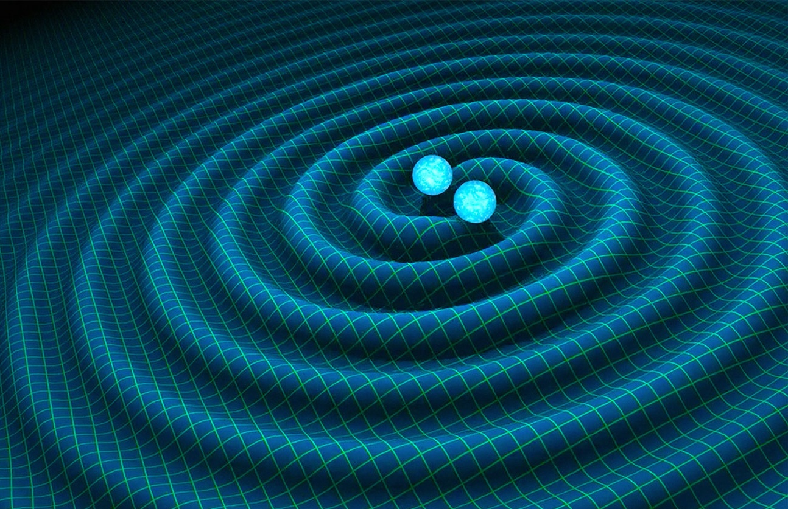
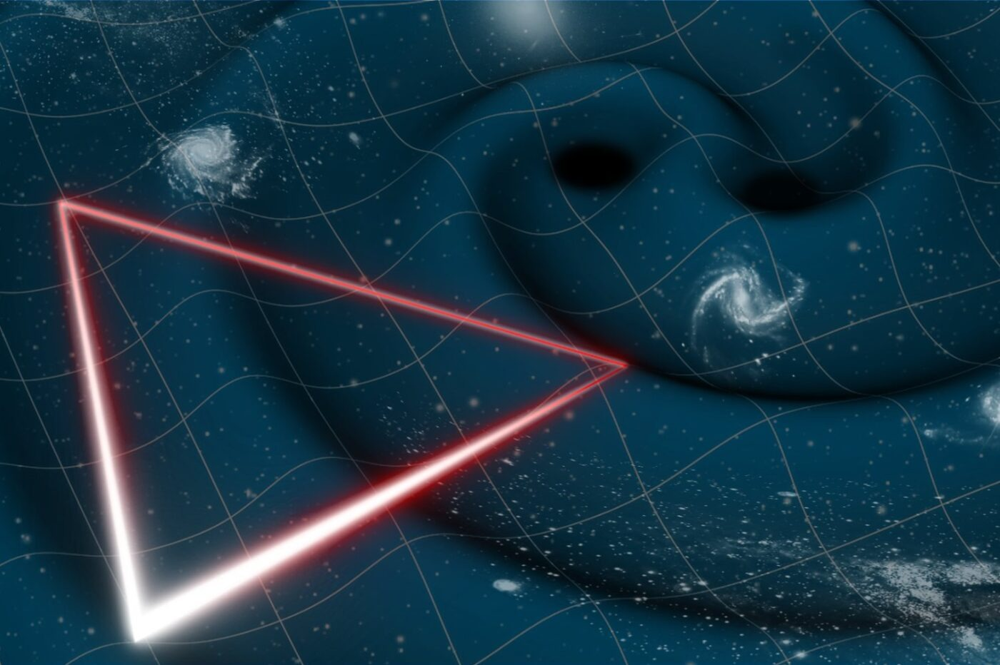

Research (Page under construction.)
PhD thesis work
Advised by Prof. Stephen Taylor. First paper published November 2024.
Identifying Host Galaxies of Supermassive Black Hole Binaries Found by Pulsar Timing Arrays
Undergraduate projects
EM counterparts to GW sources in future LVK observing runs
As an NSF REU student at the University of Minnesota in the summer of 2020, I learned about the optimization of electromagnetic counterparts searches to LIGO/Virgo/KAGRA sources alongside Prof. Michael Coughlin, Dr. Leo Singer, and other collaborators on the GROWTH (Global Relay of Observatories Watching Transients Happen) team. Because these searches require large commitments of telescope time, optical facilities must be selective about which GW events to follow up. Using the Zwicky Transient Facility scheduling software, kilonova light curve simulations, and GW localization skymaps, my research focused on simulating observation plans and EM counterpart detection rates for binary neutron star (BNS) and neutron star-black hole (NSBH) mergers. As I continued this work through the rest of 2020 and most of 2021, our simulations in different observing scenarios for future LVK observing runs O4 and O5 showed that future observing runs will have to contend with large localization areas and luminosity distances, and these factors will in turn contribute to a low fraction of GW events for which EM counterparts will be detectable. See the publication on our findings here: Data-driven Expectations for Electromagnetic Counterpart Searches Based on LIGO/Virgo Public Alerts

Massive black hole binary mergers detectable with LISA
Despite beginning my MMA journey working on LVK sources, I always had an interest in massive black hole research. This desire led me to work with Prof. Tiziana DiMatteo and Dr. Colin DeGraf at Carnegie Mellon from 2020-2021. During this period, I studied massive black hole binaries (MBHBs) in the Illustris and IllustrisTNG simulations, making predictions for future GW detections with LISA. In particular, I investigated the frequency-strain evolution of MBHBs from these simulations, comparing them against the LISA sensitivity curve to determine the timespan during which they will be detectable as well as the effect that different MBHB parameters have on LISA’s sensitivity to these systems.
Stellar multiplicity statistics
In the summer of 2019, I began doing astrophysics research for the first time, working with Prof. Carles Badenes and Dr. Christine Mazzola at the University of Pittsburgh to study stellar multiplicity statistics. We examined maximum shifts in radial velocity for red giant stars, particularly looking for excess UV and optical radiation in combination with these shifts, which would indicate the presence of a companion star. This first stint of astrophysics research taught me how to work with large sky survey catalogs and compare survey data to broadband spectral energy distributions fitted using the MIST and Kurucz models.